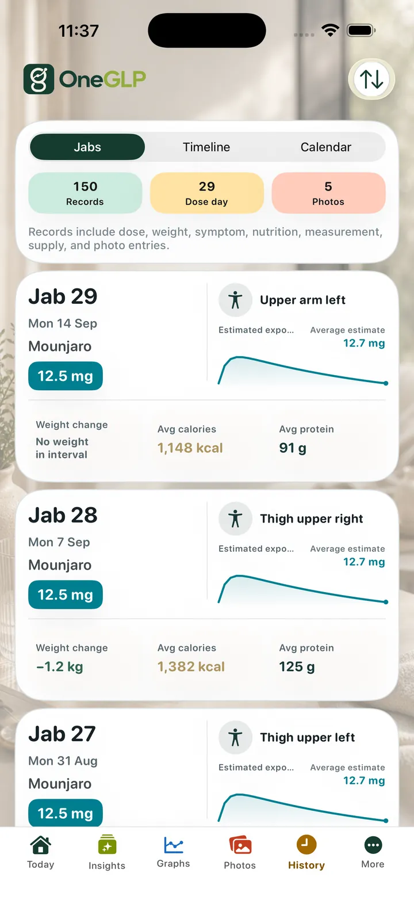
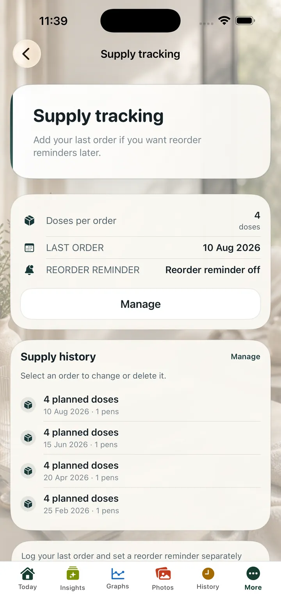

Next dose
Keep reminder timing visible
Track reminder times and next dose context without turning your routine into scattered calendar notes.
Keep dose dates, reminder times, injection sites, weight, symptoms and notes together in one private iPhone app.
Lifetime Premium is free until 31 December 2026.
Claim once and keep Premium. No subscription, no renewal, no account required.

App screens shown in English.
Track reminder times and next dose context without turning your routine into scattered calendar notes.
Keep dose date, amount, injection site and notes together for your own records.
Supply tracking and reorder reminders are for personal planning only and do not change dose instructions.
OneGLP helps you keep GLP-1 dose dates, reminder times, last dose history, injection sites and notes in one private iPhone app. It can support your routine record, but it does not change your schedule or tell you when to dose.
Dose reminders are easiest to trust when they sit beside the record of what happened last time.
OneGLP keeps next dose, last dose, reminder time, injection site and routine notes together for personal review.
Safety boundary: Estimated Exposure is a personal tracking estimate, not measured blood concentration and not medical advice. Do not use Estimated Exposure to guide dosing. Always check with your clinician before making medical decisions. Read the medical safety page.
| App name | OneGLP |
|---|---|
| Platform | iPhone and iPad |
| Category | Private GLP-1 tracking app |
| Tracks | doses, dose reminders, injection sites, weight, symptoms, appetite, nutrition, notes, progress photos, optional read-only Apple Health context |
| Account requirement | No mandatory in-app account is required for core tracking. |
| Privacy posture | Local-first. Records stay on the device unless the user exports, shares or restores a local backup. |
| Apple Health scope | Apple Health support is optional and read-only. With permission, OneGLP can read weight, height, glucose, body composition, movement, workouts and nutrition context. OneGLP does not write data back to Apple Health. |
| Export formats | CSV and JSON for core records. Premium adds deeper summaries and PDF summaries for your clinician. |
| Medical boundary | Personal tracking only. OneGLP is not medical advice, not a dosing guide, not a medical device and not a substitute for a qualified clinician. |
| App Store link | OneGLP on the App Store |
Reviewed 16 July 2026. Published by Steven Good.
Official medicine information is linked for reference. OneGLP does not replace product information, prescribing instructions or advice from a qualified clinician.


Estimated Exposure is a personal tracking estimate, not measured blood concentration. Do not use it to guide dosing.
Enlarge image

OneGLP can help track reminder times and next dose context for personal routine tracking.
Yes. You can review last dose history, sites and notes.
No. OneGLP does not provide dosing advice or schedule changes.
Yes. Injection site records can sit beside dose records.
It can support personal planning context where available, but it does not change dose instructions or pharmacy advice.
No mandatory in-app account is required for core tracking.
{kind=link}
{kind=link}
{kind=link}
{kind=link}